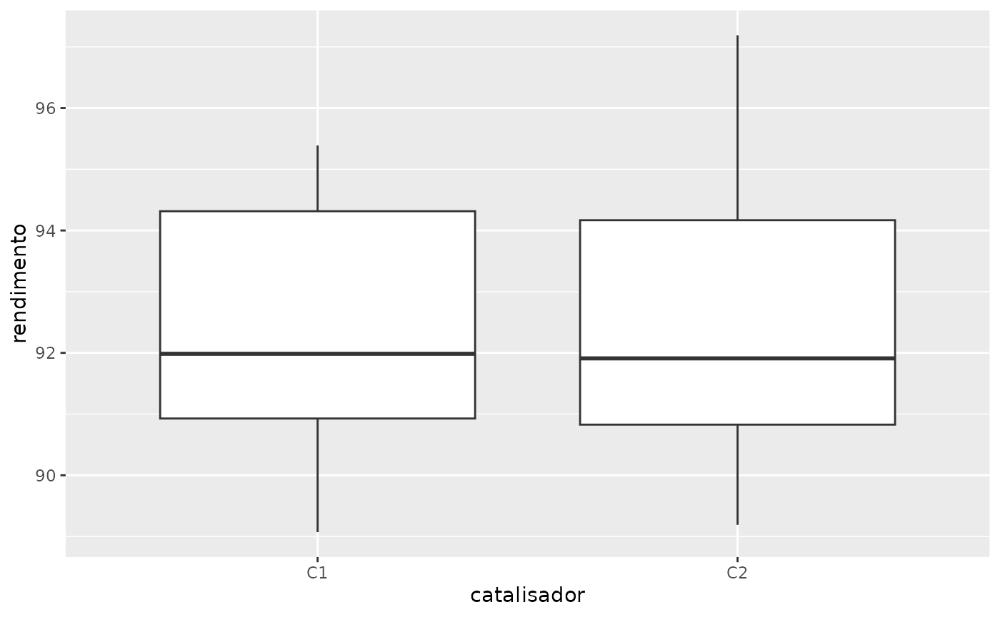
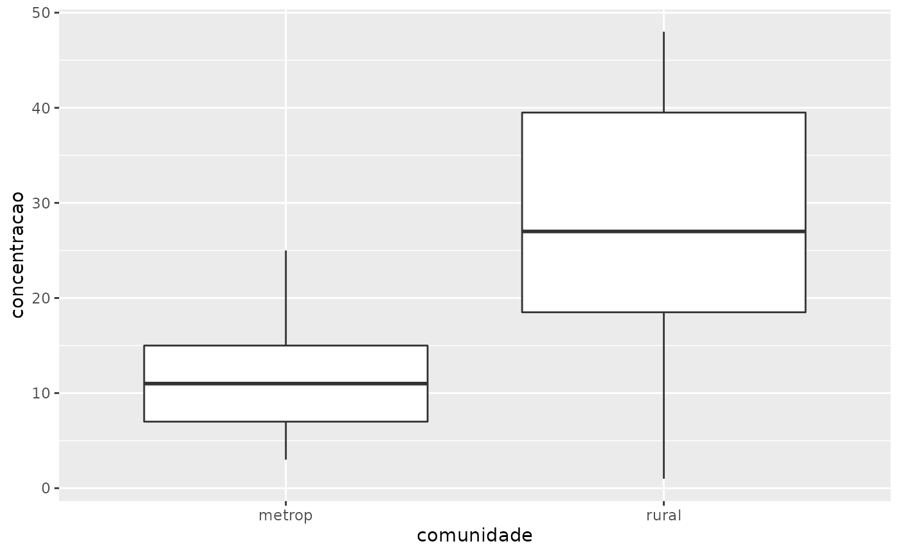

Exemplo 10.1 (adaptado): Um engenheiro está interessado em desenvolver uma nova formulação para uma tinta. Duas formulações de tintas são testadas: a formulação 1, que tem uma química padrão, e a formulação 2, que possui um novo ingrediente para secagem (espera-se que essa nova formulação leve a redução do tempo médio de secagem). Com base em experimentos passados, o engenheiro sabe que o desivo-padrão do tempo de secagem é igual a 8 minutos, e que essa variabilidade não deve ser afetada pela adição do novo ingrediente. Dez espécimes são pintados com a formulação 1 e outros dez com a formulação 2, sendo a determinação da formulação utilizada para cada espécime feita de forma aleatória. Os dados desse experimento foram gerados artificialmente no R para fins de ilustração da parte computacional.
library(planex)
library(tidyverse)
# formato longo:
glimpse(tintas)
#> Rows: 20
#> Columns: 2
#> $ formulacao <chr> "F1", "F2", "F1", "F2", "F1", "F2", "F1", "F2", "F1", "F2",…
#> $ tempo <dbl> 130.76740, 99.18879, 127.96217, 105.37315, 124.36982, 108.1…
data(tintas)
z.test(tempo~formulacao, sigma = 8, alternative = "greater", data = tintas)
#>
#> Two-sample z-test
#>
#> data: tintas
#> z = 2.7204, p-value = 0.00326
#> alternative hypothesis: true difference in means is greater than 0
#> 95 percent confidence interval:
#> 3.848103 Inf
#> sample estimates:
#> mean in group F1 mean in group F2
#> 122.2223 112.4894
# formato largo:
data(tintas2)
glimpse(tintas2)
#> Rows: 10
#> Columns: 2
#> $ F1 <dbl> 130.7674, 127.9622, 124.3698, 104.6982, 135.3703, 130.9753, 109.996…
#> $ F2 <dbl> 99.18879, 105.37315, 108.18680, 121.52813, 104.04994, 114.23531, 12…
with(tintas2,
z.test(x=F1, y=F2, sigma = 8, alternative = "greater")
)
#>
#> Two-sample z-test
#>
#> data: F1 and F1
#> z = 2.7204, p-value = 0.00326
#> alternative hypothesis: true difference in means is greater than 0
#> 95 percent confidence interval:
#> 3.848103 Inf
#> sample estimates:
#> mean in group F1 mean in group F2
#> 122.2223 112.4894Alternativamente:
# mudando o nível de referência:
tintas <- tintas %>%
mutate(
formulacao = factor(formulacao, levels = c("F2", "F1"))
)
levels(tintas$formulacao)
#> [1] "F2" "F1"
z.test(tempo~formulacao, sigma = 8, alternative = "less", data = tintas)
#>
#> Two-sample z-test
#>
#> data: tintas
#> z = -2.7204, p-value = 0.00326
#> alternative hypothesis: true difference in means is less than 0
#> 95 percent confidence interval:
#> -Inf -3.848103
#> sample estimates:
#> mean in group F2 mean in group F1
#> 112.4894 122.2223
with(tintas2,
z.test(x=F2, y=F1, sigma = 8, alternative = "less")
)
#>
#> Two-sample z-test
#>
#> data: F2 and F2
#> z = -2.7204, p-value = 0.00326
#> alternative hypothesis: true difference in means is less than 0
#> 95 percent confidence interval:
#> -Inf -3.848103
#> sample estimates:
#> mean in group F2 mean in group F1
#> 112.4894 122.2223Exemplo 10.4 (adaptado): Testes de resistência à tensão foram feitos em dois tipos diferentes de estruturas de alumínio. Essas estruturas foram usadas na fabricação das asas de um avião comercial. De experiências passadas com o processo de fabricação dessas estruturas e com o procedimento de testes, os desvios-padrão são considerados conhecidos (\(\sigma_{1} = 1\) e \(\sigma_{2} = 1.5\), respectivamente). Os dados desse experimentos estão disponíveis no conjunto de dados aluminio do pacote planex. Obtenha um intervalo de confiança de 90% para a diferença das médias.
library(planex)
data(aluminio)
z.test(resistencia ~ estrutura, sigma = c(1, 1.5), conf.level = 0.9, data = aluminio)
#>
#> Two-sample z-test
#>
#> data: aluminio
#> z = 24.033, p-value < 2.2e-16
#> alternative hypothesis: true difference in means is not equal to 0
#> 90 percent confidence interval:
#> 12.00449 13.76840
#> sample estimates:
#> mean in group E1 mean in group E2
#> 87.77779 74.89135
# fazendo as contas passo a passo:
sigma <- c(1, 1.5)
n <- c(10, 12)
alpha <- 0.1
medias <- with(aluminio, tapply(resistencia, estrutura, mean))
medias
#> E1 E2
#> 87.77779 74.89135
dbar <- medias[1]-medias[2]
V <- (sigma[1]^2)/n[1] + (sigma[2]^2)/n[2]
V
#> [1] 0.2875Sejam \(X_{11}, ..., X_{1n_{1}}\) a.a. de \(X_{1}\sim N(\mu_{1};\sigma_{1}^{2})\) e \(X_{21}, ..., X_{2n_{2}}\) a.a. de \(X_{2}\sim N(\mu_{1};\sigma_{1}^{2})\), com \(X_{1}\) e \(X_{2}\) independentes, com \(\mu_{1},\mu_{2}, \sigma_{1}^{2}\) e \(\sigma_{2}^{2}\) desconhecidos.
Considere as hipóteses:
\[\begin{eqnarray} { \left\{\begin{array}{lcc} H_{0}: \sigma_{1}^{2}/\sigma_{2}^{2}=1 \\ H_{1}: \sigma_{1}^{2}/\sigma_{2}^{2} \neq 1 \end{array}\right. } \nonumber \end{eqnarray}\]
Então, sob \(H_{0}\) segue que \(\sigma_{1}^{2}=\sigma_{2}^{2}=\sigma^{2}\). Logo,
\[\begin{eqnarray} \frac{(n_{1}-1)S_{1}^{2}}{\sigma^{2}} \sim \chi_{n_{1}-1} ~~~ \mbox{ e } ~~~ \frac{(n_{2}-1)S_{2}^{2}}{\sigma^{2}} \sim \chi_{n_{2}-1} \nonumber \end{eqnarray}\]
Consequentemente,
\[\begin{eqnarray} F_{0}=\frac{S_{1}^{2}}{S_{2}^{2}} \sim F_{(n_{1}-1;n_{2}-1)} \nonumber \end{eqnarray}\]
Assim, \(RC=\{f_{0}:f_{0}<f_{(\frac{\alpha}{2};n_{1}-1;n_{2}-1)} \mbox{ ou } f_{0}>f_{(1-\frac{\alpha}{2};n_{1}-1;n_{2}-1)}\}\), em que
\[\begin{eqnarray} f_{0}=\frac{s_{1}^{2}}{s_{2}^{2}} \nonumber \end{eqnarray}\]
é o valor observado da estatística do teste.
Cálculo do p-valor:
\[\begin{eqnarray} \alpha^{*} = 2 \times \min\{p_{1}, p_{2}\}, \nonumber \end{eqnarray}\]
em que \(p_{1}= P(F_{0}< f_0)\), \(p_{2}= P(F_{0} > f_0)\).
Regiões críticas/cálculo de p-valores associadas testes de hipóteses com alternativas unilaterias são obtidas adaptando-se a região crítica apresentada acima.
Sabemos que \[\begin{eqnarray} F=\frac{\sigma_{1}^{2}S_{2}^{2}}{\sigma_{2}^{2}S_{1}^{2}} \sim F_{(n_{2}-1;n_{1}-1)}. \nonumber \end{eqnarray}\]
Logo, intervalos de confiança de \(100(1-\alpha)\%\) para \(\sigma_{1}^{2}/\sigma_{2}^{2}\) são obtidos da seguinte forma:
\[\begin{eqnarray} 1-\alpha &=& P\left(f_{\frac{\alpha}{2}; n_{2}-1, n_{1}-1} < \frac{\sigma_{1}^{2}S_{2}^{2}}{\sigma_{2}^{2}S_{1}^{2}} < f_{1-\frac{\alpha}{2}; n_{2}-1, n_{1}-1} \right) \nonumber \\ &=& P\left(\frac{S_{1}^{2}}{S_{2}^{2}}f_{\frac{\alpha}{2}; n_{2}-1, n_{1}-1} < \frac{\sigma_{1}^{2}}{\sigma_{2}^{2}} < \frac{S_{1}^{2}}{S_{2}^{2}}f_{1-\frac{\alpha}{2}; n_{2}-1, n_{1}-1} \right), \nonumber \end{eqnarray}\]
Intervalos de confiança unilaterais são obtidos de maneira direta a partir do desenvolvimento apresentado acima.
Exemplo 10.5: Dois catalisadores estão sendo analisados para determinar como eles afetam o rendimento médio de um processo quı́mico. Especificamente, o catalisador 1 (mais caro) está correntemente em uso, mas o catalisador 2 (mais barato) é aceitável. Uma vez que o catalisador 2 é mais barato, ele deve ser adotado, desde que não altere o rendimento do processo.
library(planex)
library(planex)
data(catalisadores2)
catalisadores2
#> C1 C2
#> 1 91.50 89.19
#> 2 94.18 90.95
#> 3 92.18 90.46
#> 4 95.39 93.21
#> 5 91.79 97.19
#> 6 89.07 97.04
#> 7 94.72 91.07
#> 8 89.21 92.75
# testando a igualdade das variâncias:
with(catalisadores2, var.test(C1, C2))
#>
#> F test to compare two variances
#>
#> data: C1 and C2
#> F = 0.63907, num df = 7, denom df = 7, p-value = 0.5691
#> alternative hypothesis: true ratio of variances is not equal to 1
#> 95 percent confidence interval:
#> 0.1279433 3.1920724
#> sample estimates:
#> ratio of variances
#> 0.6390651Trabalhando com os dados em formato de pilha:
cat <- catalisadores2 %>%
pivot_longer(
cols = everything(),
names_to = "catalisador",
values_to = "rendimento"
)
ggplot(cat, aes(x=catalisador, y = rendimento)) +
geom_boxplot()
var.test(rendimento~catalisador, data = cat)
#>
#> F test to compare two variances
#>
#> data: rendimento by catalisador
#> F = 0.63907, num df = 7, denom df = 7, p-value = 0.5691
#> alternative hypothesis: true ratio of variances is not equal to 1
#> 95 percent confidence interval:
#> 0.1279433 3.1920724
#> sample estimates:
#> ratio of variances
#> 0.6390651
t.test(rendimento~catalisador, data = cat, var.equal = TRUE)
#>
#> Two Sample t-test
#>
#> data: rendimento by catalisador
#> t = -0.35359, df = 14, p-value = 0.7289
#> alternative hypothesis: true difference in means between group C1 and group C2 is not equal to 0
#> 95 percent confidence interval:
#> -3.373886 2.418886
#> sample estimates:
#> mean in group C1 mean in group C2
#> 92.2550 92.7325
data(arsenio)
arsenio
#> metrop rural
#> 1 3 48
#> 2 7 44
#> 3 25 40
#> 4 10 38
#> 5 15 33
#> 6 6 21
#> 7 12 20
#> 8 25 12
#> 9 15 1
#> 10 7 18
arsenio <- arsenio %>%
pivot_longer(
cols = everything(),
names_to = "comunidade",
values_to = "concentracao"
)
arsenio
#> # A tibble: 20 × 2
#> comunidade concentracao
#> <chr> <int>
#> 1 metrop 3
#> 2 rural 48
#> 3 metrop 7
#> 4 rural 44
#> 5 metrop 25
#> 6 rural 40
#> 7 metrop 10
#> 8 rural 38
#> 9 metrop 15
#> 10 rural 33
#> 11 metrop 6
#> 12 rural 21
#> 13 metrop 12
#> 14 rural 20
#> 15 metrop 25
#> 16 rural 12
#> 17 metrop 15
#> 18 rural 1
#> 19 metrop 7
#> 20 rural 18
ggplot(arsenio, aes(x=comunidade, y=concentracao)) +
geom_boxplot()
var.test(concentracao~comunidade, data=arsenio)
#>
#> F test to compare two variances
#>
#> data: concentracao by comunidade
#> F = 0.24735, num df = 9, denom df = 9, p-value = 0.04936
#> alternative hypothesis: true ratio of variances is not equal to 1
#> 95 percent confidence interval:
#> 0.06143758 0.99581888
#> sample estimates:
#> ratio of variances
#> 0.2473473
t.test(concentracao~comunidade, data=arsenio)
#>
#> Welch Two Sample t-test
#>
#> data: concentracao by comunidade
#> t = -2.7669, df = 13.196, p-value = 0.01583
#> alternative hypothesis: true difference in means between group metrop and group rural is not equal to 0
#> 95 percent confidence interval:
#> -26.694067 -3.305933
#> sample estimates:
#> mean in group metrop mean in group rural
#> 12.5 27.5
t.test(concentracao~comunidade, data=arsenio, var.equal = TRUE)
#>
#> Two Sample t-test
#>
#> data: concentracao by comunidade
#> t = -2.7669, df = 18, p-value = 0.0127
#> alternative hypothesis: true difference in means between group metrop and group rural is not equal to 0
#> 95 percent confidence interval:
#> -26.389418 -3.610582
#> sample estimates:
#> mean in group metrop mean in group rural
#> 12.5 27.5